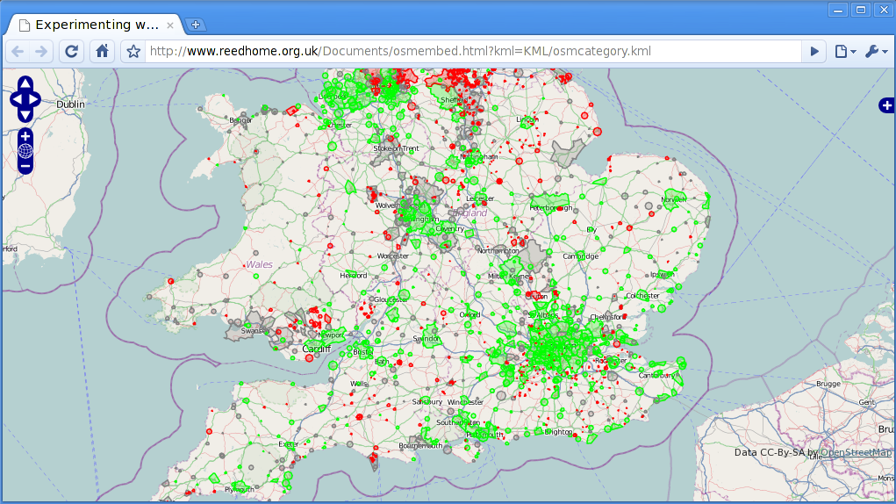

One common sentiment often heard in contemporary map literature is that the earth is more or less completely mapped. The availability of satellite imagery in tools like Google Earth, and the ability to zoom shockingly far into a dizzying array of places, from power plants in North Korea to the top of Macchu Pichu, gives the casual user the impression that we have indeed created a complete map of the world. However, if one attempts to find imagery of places which are removed socioeconomically, it becomes clear that while there may not be many blank spots on the map, there are an abundace of blurry spots.
This of course sidesteps the fact that an aerial image does not a map make -- that is to say, in order to take advantage of the many applications of geographic data, vector maps which geometrically and semantically describe features must exist, including labels, tags, metadata, and even parseable relations - from which driving routes may be calculated. These are almost entirely absent from many areas of the world (see Chapter 4). Amongst cartographers, the idea that maps accurately, or even completely depict a location is not entertained in a literal sense, yet there persists a sense that complete maps are possible. Within certain realms, communities such as OpenStreetMap have declared completion, as in an email by Etienne Cherdlu to the project's developer mailing list in 2006, entitled `UK Motorways 100% Complete':
I'm pleased to announce that the main carriageways of all mainland UK motorways have been completed. Over 3,000 km of roadway.
| r0.5

|
Still, OpenStreetMap's tagline describes the project as an 'editable map of the whole world', and the scope of the project is growing. The inclusion of increasingly subjective data has transformed the project, from road conditions to contested political boundaries such as the borders of Palestine or the existence of Western Sahara as a sovereign nation, to the possibilities of including indoor features such as rooms and hallways. Yet the premise of mapping the entire planet should remain an obvious fantasy; in fact, the fiction of such a complete map has been explored by several authors, most notably in a short story by Jorge Luis Borges and Adolfo Bioy Casares, called `On Exactitude in Science':
...In that Empire, the craft of Cartography attained such Perfection that the Map of a Single province covered the space of an entire City, and the Map of the Empire itself an entire Province. In the course of Time, these Extensive maps were found somehow wanting, and so the College of Cartographers evolved a Map of the Empire that was of the same Scale as the Empire and that coincided with it point for point. Less attentive to the Study of Cartography, succeeding Generations came to judge a map of such Magnitude cumbersome, and, not without Irreverence, they abandoned it to the Rigours of sun and Rain. In the western Deserts, tattered Fragments of the Map are still to be found, Sheltering an occasional Beast or beggar; in the whole Nation, no other relic is left of the Discipline of Geography. [7] 3.1
Beyond the technical impossibility of total mapping lies the trend towards increasingly individualistic, subjective, and divergent models of the world, which inevitably occur as maps become more universal and more detailed. Rather than pursuing the goal of a single canonical representation of the planet and all of its conflicting interpretations, participatory map-making should embrace diversity, and allow for separate but related means of describing the world. 3.2